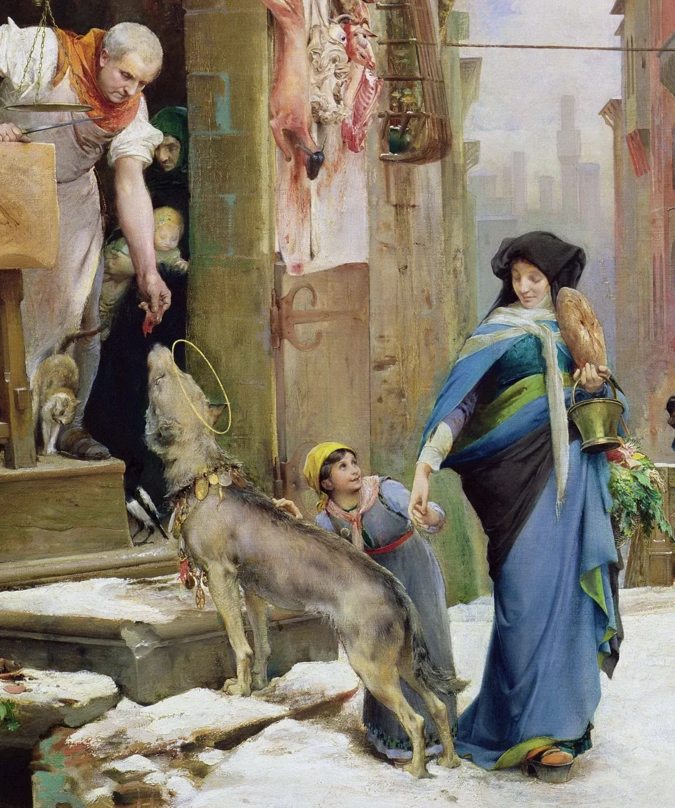

Prática pessoal
O livro, um desafio seu e tempo entre os encontros para experimentar. Os registros ficam num caderno digital privado, com opção de compartilhar reflexões, e em PDF preenchível.
O tempo de prática será orientado ao longo do percurso.
Um espaço para experimentar as práticas em você, olhar para o que acontece e conversar sobre isso com outras pessoas.
Previsão de início: 1º trimestre de 2027

Luc-Olivier Merson · Le loup d’Agubbio, 1877 · detalhe da pintura
Que resposta é possível diante do sofrimento?
Na pintura, o cuidado aparece em gestos: a mão oferece alimento, a menina se aproxima, a vida da cidade continua. Ela abre uma pergunta para o grupo: como desenvolver uma disposição sábia e corajosa para perceber o sofrimento e agir para aliviá-lo — inclusive quando ele é nosso?
Você pratica, observa suas respostas e encontra palavras para pensar sobre elas.
O percurso se apoia na autoprática e autorreflexão propostas por Russell Kolts, Tobyn Bell, James Bennett-Levy e Chris Irons em Experiencing Compassion-Focused Therapy from the Inside Out.
Cada participante precisa ter seu exemplar do livro. Os cadernos do grupo apoiam a experiência com espaço para registros pessoais e reflexões.
Uma preparação compartilhada, seguida de prática pessoal e reflexão em grupo.
No primeiro encontro, a gente se conhece, conversa sobre expectativas e acordos e tem uma introdução à TFC. Há espaço para perguntas, para falar das dificuldades e começar a pensar nos desafios que cada pessoa quer trabalhar.
No segundo encontro, retomamos os acordos, as dúvidas e os receios. Começamos juntos a avaliação inicial e a escolha do desafio que vai orientar a autoprática.
Entre os encontros, você experimenta as propostas do livro e registra o que percebe. A cada quinze dias, o grupo conversa sobre as experiências, dificuldades e descobertas. Um participante fica responsável por abrir a reflexão.
Ao longo do percurso, a gente articula as práticas com a vida cotidiana e revisa o que faz sentido continuar. A sequência será ajustada a partir da autoprática prévia do facilitador e da experiência do grupo.
O livro, um desafio seu e tempo entre os encontros para experimentar. Os registros ficam num caderno digital privado, com opção de compartilhar reflexões, e em PDF preenchível.
O tempo de prática será orientado ao longo do percurso.
Encontros online de 90 minutos, com facilitação de Francisco Ilo e papéis rotativos entre os participantes. A combinação entre prática, conversa e fundamentos é flexível.
Sábado de manhã é uma possibilidade ainda provisória.
Não haverá gravações. Compartilhar reflexões é voluntário e incentivado. Os acordos de convivência e de cuidado com o que é dito serão construídos no primeiro encontro.
Você escolhe o que deseja compartilhar.

Sou o Ilo, psicólogo e um curioso da vida e das relações humanas.
Vou facilitar os encontros e participar da reflexão sobre a experiência de praticar. A abertura de cada conversa será compartilhada com os participantes.
Francisco Ilo Lima Filho, CRP 11/17085. Especialista em Terapia de Aceitação e Compromisso, com formação em Psicoterapia Analítica Funcional e em Terapia Comportamental Integrativa de Casais. franciscoilo.com · @fco.ilo
R$ 350mensalidade por participante
A previsão é de 5 a 6 meses de percurso. O livro é adquirido separadamente. A inscrição e o pagamento serão feitos pelo site quando a turma abrir.
O calendário e o horário serão confirmados antes das inscrições.
Por enquanto, o botão leva ao grupo geral de interesse do Clube 03 no WhatsApp. Entrar lá não faz uma inscrição nem reserva uma vaga.
O grupo é aberto a profissionais de saúde mental e a outras pessoas interessadas em experimentar as práticas de compaixão e refletir sobre a própria experiência.
A proposta é de autoprática e autorreflexão com apoio de um livro e de encontros em grupo. O grupo não substitui acompanhamento psicológico individual e não oferece habilitação profissional em TFC.
Os registros pessoais são privados. Você pode escolher compartilhar reflexões com o grupo. O WhatsApp será usado para avisos e trocas, dentro dos acordos construídos no primeiro encontro.
O ponto de partida são os 16 módulos essenciais do livro, organizados em um percurso de 10 a 12 encontros. Módulos do livro e encontros do grupo não correspondem um a um. A distribuição será ajustada após a autoprática individual prévia do organizador.
O grupo poderá decidir coletivamente por até dois encontros extras, sem cobrança adicional.
Não haverá gravações. A presença ao vivo faz parte da proposta; dúvidas sobre uma ausência poderão ser conversadas com o facilitador.